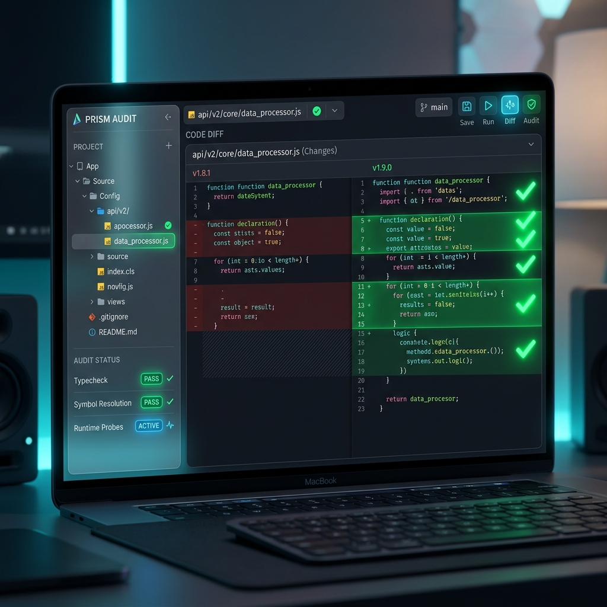

The verification layer for AI-built software.
AI generates the code. Prism makes it safe to ship. Catch silent failures, broken callers, and drifted types before they hit production.
The bottleneck has moved.
Software creation has accelerated, but verification has not. Prism is the second pass that proves machine-generated code is safe to deploy.
Deterministic Checks
Go beyond "looks right." Prism uses typecheck, LSP diagnostics, and runtime probes to find what LLMs miss.
Broken Callers
Catch the ripple effects. AI refactors often leave broken references in files it didn't even "touch." Prism sees them all.
Silent Failures
Drifted types, half-rewired routes, and dead imports. Prism identifies the invisible debt AI leaves behind.
Generation and verification are separate jobs.
Prism optimizes for evidence and confidence. It doesn't ask "what could be?" It asks "what can be proven?"
- compiler-backed verification
- runtime verification probes
- symbol resolution maps
- automated fix workflows

One substrate. Multiple workflows.
Whether you're building a new feature or auditing a complex refactor, Prism has the tools to make it ship-ready.
/audit
Deep Audit
Scans the entire codebase for inconsistencies introduced by recent changes.
/fix
Smart Fix
Automatically resolves broken callers and type drifts found during audit.
/refactor
Verified Refactor
Guards the refactor process with real-time verification at every step.